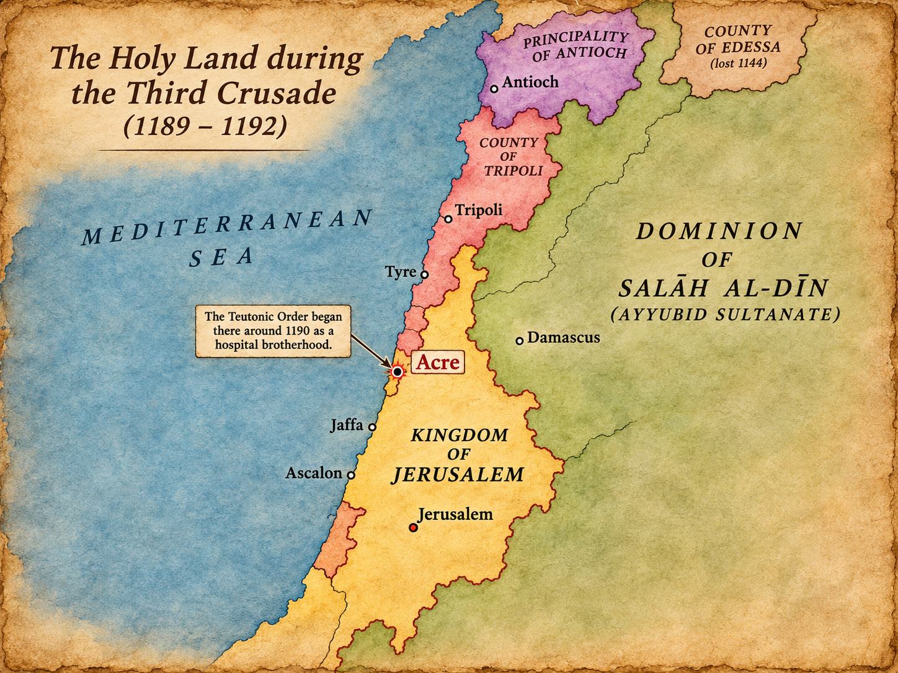
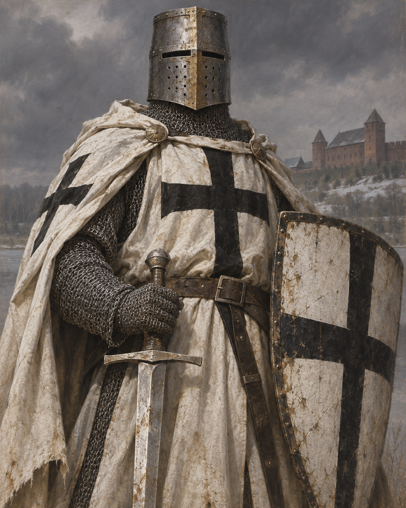
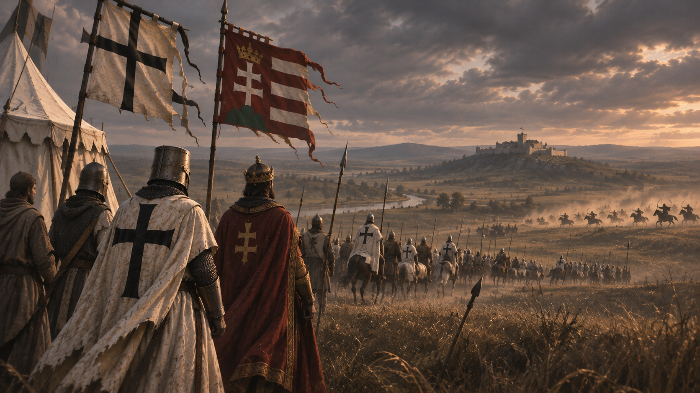
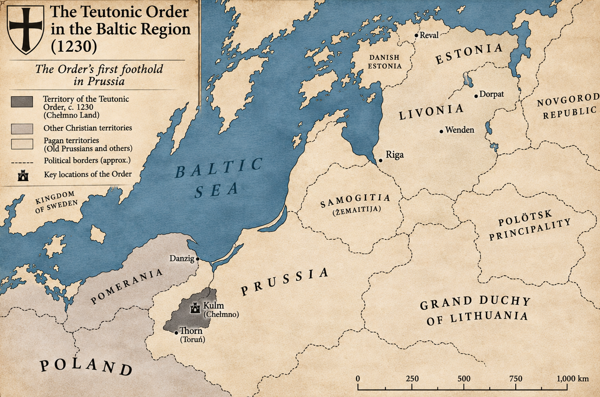
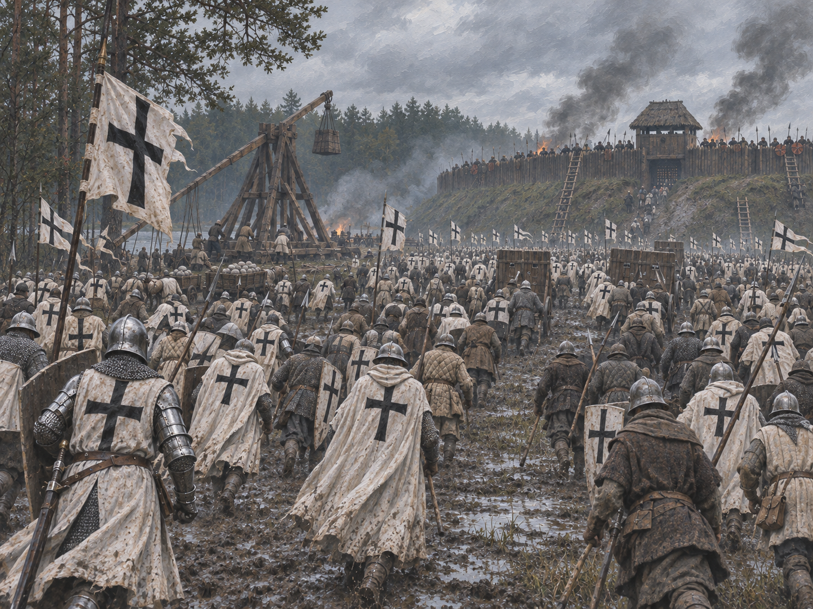
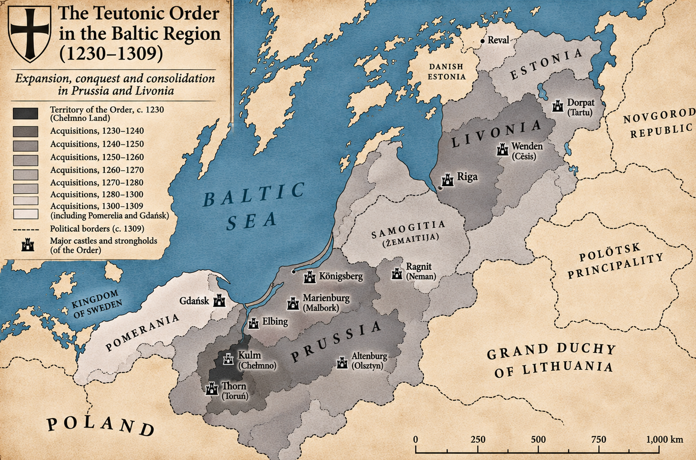

Introduction
This page is dedicated to the Teutonic Order and only the Teutonic Order. Here, you might find quite an interesting but, even more importantly, engaging story of an order that once was thought to be terrifying.
The aforementioned organisation existed in medieval Europe. It participated in various wars, engaged in political games and served God, or at least claimed to act in His name. The organisation was one of the orders that were formed relatively late compared to other ones.
Nevertheless, it became one of the greatest and most powerful medieval orders ever. Despite its reputation for chivalry, Teutonic knights could easily be perceived as madmen. The knights were known for being a formidable force in the Baltic region, men-at-arms with certain beliefs. Once, they started as a modest brotherhood and eventually its influence would extend far beyond the Baltic region.
The Birth of the Brotherhood (1190 to 1230)
There is a certain irony in the origins of the Teutonic Order. Before its knights acquired castles, armies and political influence, their predecessors were occupied with a rather different business: keeping crusaders alive.
Around 1190, during the Third Crusade, German-speaking crusaders established a hospital outside Acre, a fortified port on the eastern Mediterranean. The city was under siege, disease was widespread, and the wounded needed treatment. According to the Order's traditional account, the first shelter was improvised from ships' sails. Hardly the grand beginning one might expect from a future military power.

The brotherhood did not remain merely a medical institution for long. In 1198, it was reorganised as a military-religious order, modelled in part on the already established Templars and Hospitallers. Its members combined monastic vows with armed service: poverty, chastity and obedience on one side; armour, horses and military discipline on the other. Medieval Europe, apparently, saw no fundamental contradiction in a monk carrying a sword.
The Order's German identity also mattered. Its hospitals, estates and supporters formed a network extending beyond the Holy Land into Europe. Donations from nobles and rulers made the brotherhood increasingly wealthy and politically useful. Yet its ambitions became especially apparent under Grand Master Hermann von Salza, who led the Order from 1210 to 1239. A capable diplomat as well as an administrator, he cultivated relations with both the papacy and Holy Roman Emperor Frederick II. Such connections proved at least as valuable as battlefield victories.

During the thirteenth century, the Order gradually established itself in the Baltic region, particularly in Prussia. Under the justification of spreading Christianity, it conducted military campaigns against pagan populations, conquered territories and established a state governed by its own religious and military hierarchy.
The first major opportunity in eastern Europe came in 1211. Andrew II of Hungary invited the Order to defend part of Transylvania against attacks by the Cumans. The knights established fortifications and strengthened their position, but their attempts to secure greater autonomy alarmed the king. In 1225, he expelled them. An awkward result for men hired to defend someone else's frontier.
The setback did not end their eastern ambitions. Konrad of Mazovia soon sought their assistance against the pagan Old Prussians along his northern border. Negotiations over land and political rights followed, supported by privileges attributed to Emperor Frederick II. The celebrated Golden Bull of Rimini bears the date 1226, although historians dispute the precise circumstances of its composition.

By approximately 1230, the Order was preparing to establish itself in Prussia. What began as a hospital in a besieged city had found the opportunity to become something far more unusual: an armed religious institution with territorial ambitions of its own.
╚══❖ㅤㅤㅤㅤㅤㅤㅤㅤㅤㅤ❖══╝
The Conquest of the Baltic (1230 to 1309)
Having been expelled from Hungary, the Teutonic Order had learned a useful lesson: defending someone else's frontier was an uncertain occupation. In Prussia, it intended to do considerably more than defend one.
Around 1230, the first knights arrived at the invitation of Konrad of Mazovia, whose lands had suffered raids from neighbouring Old Prussian communities. These were Baltic peoples with their own languages, customs and religious traditions, not a single united kingdom conveniently awaiting conquest. For the Order, however, their refusal to embrace Christianity supplied both a religious justification and an opportunity for territorial expansion.

The knights did not simply charge eastward and hope for divine assistance. They advanced methodically along the Vistula River, erecting strongholds at places such as Thorn (Toruń), Kulm (Chełmno) and Elbing. Fortresses secured supplies and communications, while new settlements attracted colonists. A conquered district was not particularly useful if its conquerors could not hold it.
Their influence expanded dramatically in 1237, when the surviving Livonian Brothers of the Sword, weakened after their defeat at the Battle of Saule, joined the Teutonic Order. This created a Livonian branch with extensive possessions in present-day Latvia and Estonia. The organisation now possessed two major Baltic centres of power, although bishops, towns and other rulers still controlled important neighbouring territories.

Victory was hardly uninterrupted. The Old Prussians resisted fiercely, with major uprisings in 1242 to 1249 and 1260 to 1274. The second rebellion threatened several of the Order's strongholds following a devastating crusader defeat at Durbe in 1260. This was no tale of helpless pagans swept aside by invincible knights. It was a prolonged and brutal struggle in which both sides suffered considerable losses.
Yet the Order possessed advantages unavailable to many of its opponents: papal support, European recruits, financial donations and an increasingly formidable network of castles. By 1283, it had largely completed the military conquest of Prussia, although resistance and frontier warfare did not disappear overnight. Its attention increasingly turned toward pagan Lithuania.
The final transformation came at the century's close. After seizing Gdańsk in 1308 and consolidating control over Pomerelia, the Order transferred the Grand Master's headquarters to Marienburg (Malbork) in 1309.

The modest hospital brotherhood of Acre had become a territorial power. The question was no longer whether these monks could conquer land, but what sort of state armed monks would build upon it.